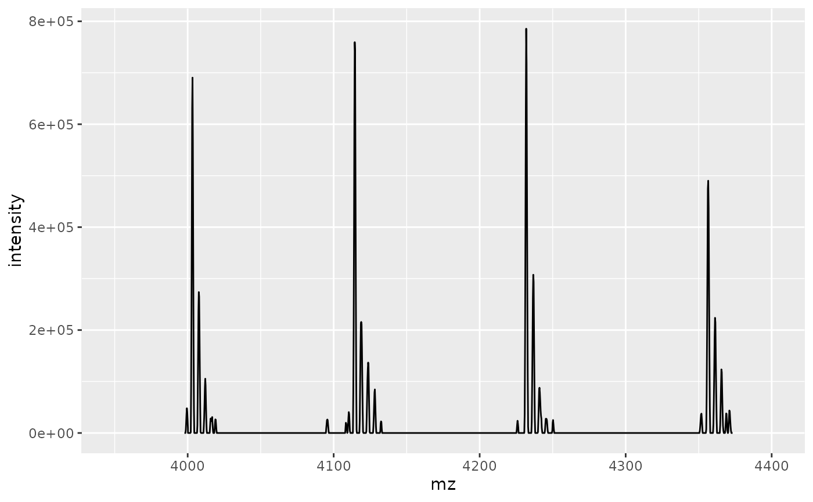
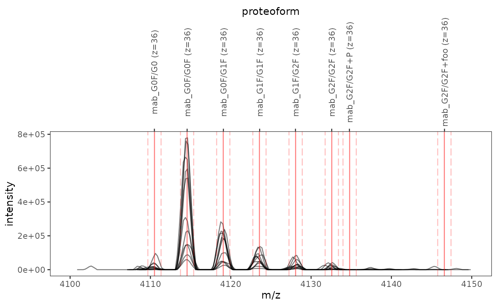
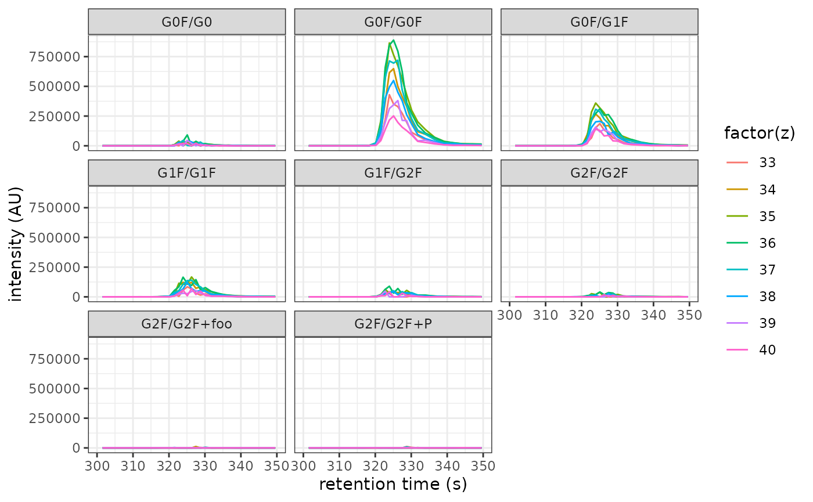
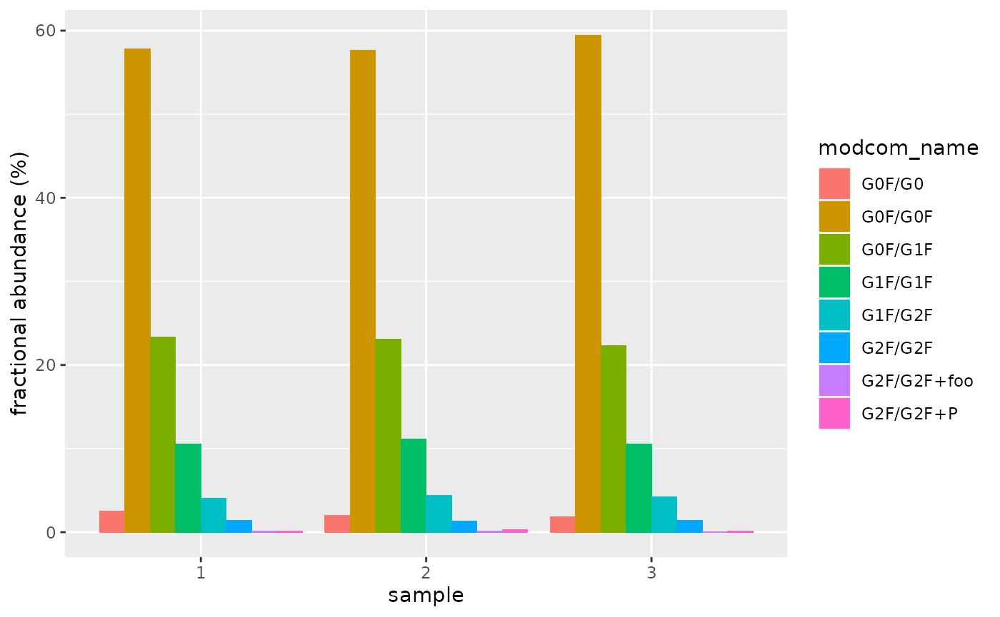
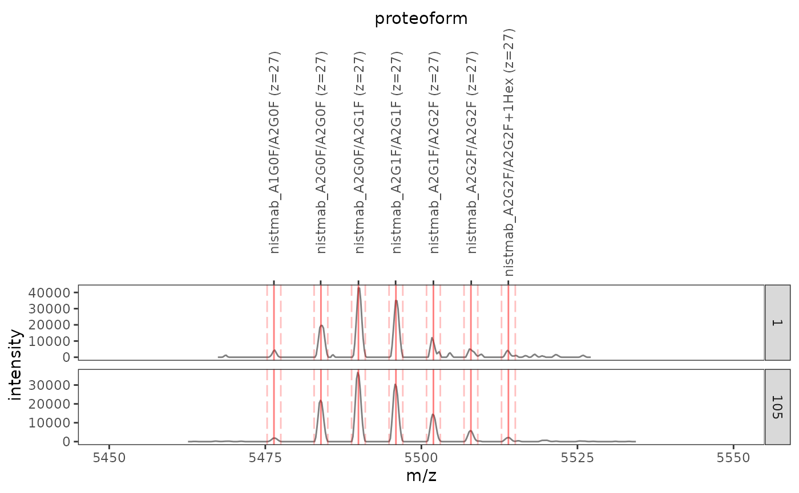

The fragquaxi package allows you to obtain fractional abundances of glycoforms (and proteoforms in general) from mass spectrometric (MS) data by quantification via XIC (extracted ion current) integration.
This package provides an S3 class mol_form that represents molecular formulas. Such a formula is created by molecular_formula():
emtansine <- molecular_formula("C35 H48 Cl1 N3 O10 S1")
emtansine
#> <molecular formula[1]>
#> [1] C35 H48 Cl N3 O10 SSpaces separating individual elements are optional, as are counts with value 1. Hence, the following function calls will return identical formula objects:
molecular_formula("C35 H48 Cl1 N3 O10 S1")
#> <molecular formula[1]>
#> [1] C35 H48 Cl N3 O10 S
molecular_formula("C35 H48 Cl N3 O10 S")
#> <molecular formula[1]>
#> [1] C35 H48 Cl N3 O10 S
molecular_formula("C35H48ClN3O10S")
#> <molecular formula[1]>
#> [1] C35 H48 Cl N3 O10 SElement counts may be negative or marked by an explicit plus sign:
molecular_formula("N-1 H-3") # Gln -> pyroglutamate
#> <molecular formula[1]>
#> [1] H-3 N-1
molecular_formula("P+1 O+3 H+1") # phosphorylation
#> <molecular formula[1]>
#> [1] H O3 PNote how the order of elements in the printed output complies with the Hill system.
molecular_formula("Cl4 C")
#> <molecular formula[1]>
#> [1] C Cl4
molecular_formula("H12 C6 O6")
#> <molecular formula[1]>
#> [1] C6 H12 O6
molecular_formula("H2SO4")
#> <molecular formula[1]>
#> [1] H2 O4 Smolecular_formula() is vectorized: If called with a string vector, it returns a vector of formulas.
molecular_formula(c("H2 O", "C6 H12 O6"))
#> <molecular formula[2]>
#> [1] H2 O C6 H12 O6Formulas support elementary arithmetic operations. (In case of multiplication and division, the numeric multiplier is always coerced to integer in order to ensure that element counts remain integral. Moreover, division is always integral.)
f1 <- molecular_formula("C6 H10 O5")
f2 <- molecular_formula("C5 H11 NO2 S")
f1 + f2
#> <molecular formula[1]>
#> [1] C11 H21 N O7 S
f1 - f2
#> <molecular formula[1]>
#> [1] C H-1 N-1 O3 S-1
f1 * 2L
#> <molecular formula[1]>
#> [1] C12 H20 O10
f1 * 2.9 # multiplier implicitly converted to the integer 2L
#> <molecular formula[1]>
#> [1] C12 H20 O10
f1 / 2 # equivalent to f1 %/% 2L
#> <molecular formula[1]>
#> [1] C3 H5 O2
sum(c(f1, f2))
#> <molecular formula[1]>
#> [1] C11 H21 N O7 Sget_mass() calculates the molecular mass of a formula:
molecular_formula("C6 H10 O5") %>% get_mass()
#> [1] 162.141By default, get_mass() uses average atomic masses. However, the package also provides monoisotopic masses:
molecular_formula("C6 H10 O5") %>% get_mass(mass_set = "monoisotopic")
#> [1] 167.0528The dataset atomic_masses provides these average and monoisotopic masses:
atomic_masses
#> # A tibble: 118 x 6
#> element name Z average A monoisotopic
#> <chr> <chr> <int> <dbl> <int> <dbl>
#> 1 H hydrogen 1 1.01 1 1.01
#> 2 He helium 2 4.00 4 4.00
#> 3 Li lithium 3 6.94 7 7.02
#> 4 Be beryllium 4 9.01 9 9.01
#> 5 B boron 5 10.8 11 11.0
#> 6 C carbon 6 12.0 12 12
#> 7 N nitrogen 7 14.0 14 14.0
#> 8 O oxygen 8 16.0 16 17.0
#> 9 F fluorine 9 19.0 19 20.0
#> 10 Ne neon 10 20.2 20 21.0
#> # … with 108 more rowsnew_mass_set() allows you to define custom mass sets:
my_masses <- new_mass_set(c(H = 10, C = 100, O = 1))
molecular_formula("C6 H8 O5") %>% get_mass(my_masses)
#> [1] 685In order to avoid missing values in custom mass sets, you may choose to inherit masses from a previously defined set via the argument inherits_from:
my_masses_complete <- new_mass_set(
c(H = 10, C = 100, O = 1),
inherits_from = "average"
)
molecular_formula("H2 S O4") %>% get_mass(my_masses)
#> [1] NA
molecular_formula("H2 S O4") %>% get_mass(my_masses_complete)
#> [1] 56.06charge() converts a molecular mass to a mass-to-charge ratio:
charge(150000, z = 20:24)
#> 20 21 22 23 24
#> 7501.008 7143.865 6819.190 6522.747 6251.008charge() naturally works with masses calculated for molecular formulas:
molecular_formula("C6464 H9950 N1706 O2014 S44") %>%
get_mass() %>%
charge(20:24)
#> 20 21 22 23 24
#> 7260.872 6915.164 6600.884 6313.933 6050.894Prepare data for quantification in three steps: (1) Define proteins; (2) define PTM compositions; (3) assemble proteoforms and calculate their masses; and (4) select ions to be quantified.
define_proteins() loads protein sequences in FASTA format and obtains their formulas. Each FASTA file must contain one record for each protein chain (so that the formula reflects the correct number of chain termini). In addition, indicate the number of disulfide bridges (if any) via the optional argument .disulfides.
mab_sequence <- system.file(
"extdata", "mab_sequence.fasta",
package = "fragquaxi"
)
proteins <- define_proteins(
mab = mab_sequence,
.disulfides = 16
)
proteins
#> # A tibble: 1 x 3
#> protein_name protein_data protein_formula
#> <chr> <list> <mol>
#> 1 mab <tibble [1 × 2]> C6464 H9950 N1706 O2014 S44The resulting protein specification is a data frame that describes one protein per row and comprises three columns: protein_name, protein names derived from the argument names in define_proteins(); protein_data, a nested column that stores the FASTA file name and number of disulfides; and protein_formula, the formula calculated from the amino acid sequence, taking into account the numbers of disulfides and chains.
fragquaxi is tailored towards analysis of proteoforms, i.e., the different molecular forms in which the protein product of a single gene can be found due to changes introduced by posttranslational modifications (PTMs). In the context of this package, proteoforms are described by their PTM compositions (or modcoms in short):
ptm_compositions <- tribble(
~modcom_name, ~Hex, ~HexNAc, ~Fuc, ~PHOS, ~foo,
"G0F/G0", 6, 8, 1, 0, 0,
"G0F/G0F", 6, 8, 2, 0, 0,
"G0F/G1F", 7, 8, 2, 0, 0,
"G1F/G1F", 8, 8, 2, 0, 0,
"G1F/G2F", 9, 8, 2, 0, 0,
"G2F/G2F", 10, 8, 2, 0, 0,
"G2F/G2F+P", 10, 8, 2, 1, 0,
"G2F/G2F+foo", 10, 8, 2, 0, 1,
)In this data frame, each row corresponds to the PTM composition of a single proteoform. The first column must be labeled modcom_name and should contain a short description. The remaining columns must be labeled by valid PTM names (see below) and contain the number of the respective PTM found in the respective composition.
The table above describes a range of proteoforms that differ in N-glycosylation, phosphorylation (PHOS) and “fooylation” (foo). Glycosylation is described in terms of the overall monosaccharide composition of the N-glycans; consequently, the data frame includes the columns Hex, HexNAc, and Fuc to indicate the number of hexose, N-acetylhexosamine, and fucose residues, respectively.
Valid PTM names include
monosaccharides as provided in the data set monosaccharides:
monosaccharides
#> # A tibble: 83 x 5
#> abbreviation type formula short_name systematic_name
#> <chr> <chr> <chr> <chr> <chr>
#> 1 4eLeg Di-deoxy… C9 H16 N… 4-Epilegionam… 5,7-Diamino-3,5,7,9-tetradeo…
#> 2 6dAlt Deoxyhex… C6 H10 O4 6-Deoxy-L-alt… 6-Deoxy-L-altropyranose
#> 3 6dAltNAc Deoxyhex… C8 H13 N… N-Acetyl-6-de… 2-Acetamido-2,6-dideoxy-L-al…
#> 4 6dGul Deoxyhex… C6 H10 O4 6-Deoxy-D-gul… 6-Deoxy-D-gulopyranose
#> 5 6dTal Deoxyhex… C6 H10 O4 6-Deoxy-D-tal… 6-Deoxy-D-talopyranose
#> 6 6dTalNAc Deoxyhex… C8 H13 N… N-Acetyl-6-de… 2-Acetamido-2,6-dideoxy-D-ta…
#> 7 Abe Di-deoxy… C6 H10 O3 Abequose 3,6-Dideoxy-D-xylo-hexopyran…
#> 8 Aci Di-deoxy… C9 H16 N… Acinetaminic … 5,7-Diamino-3,5,7,9-tetradeo…
#> 9 All Hexose C6 H10 O5 D-Allose D-Allopyranose
#> 10 AllA Hexurona… C5 H8 O6 D-Alluronic a… D-Allopyranuronic acid
#> # … with 73 more rowsPTMs as provided in the data set ptms:
ptms
#> # A tibble: 72 x 3
#> abbreviation name formula
#> <chr> <chr> <chr>
#> 1 ACET Acetylation C2 H2 O
#> 2 ADP ADP-ribosylation C15 H21 N5 O13 P2
#> 3 ALLYS Allysine H-3 N-1 O
#> 4 AMID Amidation H N O-1
#> 5 ARCH S-archaeol C43 H86 O2
#> 6 BMTH Beta-methylthiolation C H2 S
#> 7 BIOT Biotin C10 H14 N2 O2 S
#> 8 BROM Bromination Br H-1
#> 9 CETH N6-1-carboxyethyl lysine C3 H4 O2
#> 10 CHOL Cholesterol C27 H44
#> # … with 62 more rowsother PTMs that must be defined in terms of their correction formula:
my_ptms <- c(
foo = "C42", # so this is fooylation!
bar = "H-42"
)define_ptm_compositions() creates a modcom specification from these PTM compositions and custom PTMs (if required):
modcoms <- define_ptm_compositions(ptm_compositions, other_ptms = my_ptms)
modcoms
#> # A tibble: 8 x 3
#> modcom_name modcom_data modcom_formula
#> <chr> <list> <mol>
#> 1 G0F/G0 <tibble [1 × 5]> C106 H174 N8 O74
#> 2 G0F/G0F <tibble [1 × 5]> C112 H184 N8 O78
#> 3 G0F/G1F <tibble [1 × 5]> C118 H194 N8 O83
#> 4 G1F/G1F <tibble [1 × 5]> C124 H204 N8 O88
#> 5 G1F/G2F <tibble [1 × 5]> C130 H214 N8 O93
#> 6 G2F/G2F <tibble [1 × 5]> C136 H224 N8 O98
#> 7 G2F/G2F+P <tibble [1 × 5]> C136 H225 N8 O101 P
#> 8 G2F/G2F+foo <tibble [1 × 5]> C178 H224 N8 O98The resulting modcom specification is a data frame that describes one PTM composition per row and comprises three columns: modcom_name (same column as in the input data frame); modcom_data, a nested column that contains the remaining columns from the input data frame; and modcom_formula, the correction formula associated with the respective PTM composition.
Once all proteins and modcoms have been specified in this way, assemble_proteoforms() combines them and calculates the masses of the resulting proteoforms:
pfm_masses <- assemble_proteoforms(proteins, modcoms)
pfm_masses
#> # A tibble: 8 x 4
#> protein_name modcom_name formula mass
#> <chr> <chr> <mol> <dbl>
#> 1 mab G0F/G0 C6570 H10124 N1714 O2088 S44 147942.
#> 2 mab G0F/G0F C6576 H10134 N1714 O2092 S44 148088.
#> 3 mab G0F/G1F C6582 H10144 N1714 O2097 S44 148250.
#> 4 mab G1F/G1F C6588 H10154 N1714 O2102 S44 148412.
#> 5 mab G1F/G2F C6594 H10164 N1714 O2107 S44 148574.
#> 6 mab G2F/G2F C6600 H10174 N1714 O2112 S44 148737.
#> 7 mab G2F/G2F+P C6600 H10175 N1714 O2115 P S44 148816.
#> 8 mab G2F/G2F+foo C6642 H10174 N1714 O2112 S44 149241.Combining \(p\) proteins with \(m\) modcoms yields a data frame that describes \(p \times m\) proteoforms and comprises four columns: protein_name and modcom_name, which together uniquely identify a proteoform; formula, its molecular formula; and mass, its mass in Dalton.
Finally, ionize() calculates mass-to-charge ratios of these proteoforms in selected charge_states.
pfm_ions <-
pfm_masses %>%
ionize(charge_states = 33L:40L)
pfm_ions
#> # A tibble: 64 x 8
#> protein_name modcom_name formula mass z mz
#> <chr> <chr> <mol> <dbl> <int> <dbl>
#> 1 mab G0F/G0 C6570 H10124 N1714 O2088 S44 147942. 33 4484.
#> 2 mab G0F/G0 C6570 H10124 N1714 O2088 S44 147942. 34 4352.
#> 3 mab G0F/G0 C6570 H10124 N1714 O2088 S44 147942. 35 4228.
#> 4 mab G0F/G0 C6570 H10124 N1714 O2088 S44 147942. 36 4111.
#> 5 mab G0F/G0 C6570 H10124 N1714 O2088 S44 147942. 37 3999.
#> 6 mab G0F/G0 C6570 H10124 N1714 O2088 S44 147942. 38 3894.
#> 7 mab G0F/G0 C6570 H10124 N1714 O2088 S44 147942. 39 3794.
#> 8 mab G0F/G0 C6570 H10124 N1714 O2088 S44 147942. 40 3700.
#> 9 mab G0F/G0F C6576 H10134 N1714 O2092 S44 148088. 33 4489.
#> 10 mab G0F/G0F C6576 H10134 N1714 O2092 S44 148088. 34 4357.
#> # … with 54 more rows, and 2 more variables: mz_min <dbl>, mz_max <dbl>Creating \(c\) differently charged ions for \(r\) proteoforms yields a data frame with \(c \times r\) rows, containing all variables from the input data frame as well as four additional columns: z (charge state), mz (exact mass-to-charge ratio), mz_min, and mz_max. The latter two columns represent lower and upper tolerances for the mass-to-charge ratio and will be used as integration boundaries (see below). (The width of this tolerance region is governed by the optional argument ppm; see the documentation of ionize() for details.)
Proteoform quantification requires mass spectrometric data, which can be loaded by mzR::openMSfile(). The exemplary file mab1.mzML contains mass spectra of a monoclonal antibody.
ms_data <- openMSfile(
system.file("extdata", "mzml", "mab1.mzML", package = "fragquaxi")
)The figure below shows charge states 37+ to 34+ (from left to right) of a representative scan. Each charge state comprises several discernible peaks, each of which corresponds to a single proteoform (or a set of isobaric proteoforms).
sample_spectrum <- spectra(ms_data, 128)
colnames(sample_spectrum) <- c("mz", "intensity")
sample_spectrum %>%
as_tibble() %>%
ggplot(aes(mz, intensity)) +
geom_line() +
xlim(3950, 4400)
In order to check whether the previously calculated mass-to-charge ratios match peaks in the mass spectrum, the helper function plot_ions() allows you to plot mass spectra overlaid with \(m/z\) values and integration boundaries of proteoform ions:
plot_ions(
ms_data,
ions = pfm_ions,
scans = 126:136, # plot these scans
xlim = c(4100, 4150) # zoom into charge state 36+
)
Labels on the upper \(x\)-axis denote proteoform ions, while solid and dashed red lines indicate mass-to-charge ratios and integration boundaries, respectively
quantify_ions() quantifies the previously defined proteoform ions. In the loaded MS data set, only mass spectra that were acquired at retention times between 300 and 350 seconds contain relevant information. Thus, specify these retention time limits via the argument rt_limits.
abundances <- quantify_ions(
ms_data,
pfm_ions,
rt_limits = c(300, 350)
)(rt_limits also allows to specify several retention time windows, as described in the documentation.)
Printing the quantification results stored in abundances yields a concise summary:
abundances
#> ℹ Abundances of 64 ions quantified in 352 mass spectra using 1 retention time window.
#>
#> ── Parameters ──
#>
#> MS data file:
#> '/tmp/RtmpMZpe4N/temp_libpath126f21a1228f4/fragquaxi/extdata/mzml/mab1.mzML'
#>
#> Ions:
#> # A tibble: 64 x 9
#> ion_id protein_name modcom_name formula mass z
#> <chr> <chr> <chr> <mol> <dbl> <int>
#> 1 id_1 mab G0F/G0 C6570 H10124 N1714 O2088 S44 147942. 33
#> 2 id_2 mab G0F/G0 C6570 H10124 N1714 O2088 S44 147942. 34
#> 3 id_3 mab G0F/G0 C6570 H10124 N1714 O2088 S44 147942. 35
#> 4 id_4 mab G0F/G0 C6570 H10124 N1714 O2088 S44 147942. 36
#> 5 id_5 mab G0F/G0 C6570 H10124 N1714 O2088 S44 147942. 37
#> # … with 59 more rows, and 3 more variables: mz <dbl>, mz_min <dbl>,
#> # mz_max <dbl>
#>
#> Retention time limits:
#> # A tibble: 1 x 3
#> rt_min rt_max scans
#> <dbl> <dbl> <list>
#> 1 300 350 <int [25]>
#>
#> ── Results ──
#>
#> # A tibble: 1 x 66
#> rt_min rt_max id_1 id_2 id_3 id_4 id_5 id_6 id_7 id_8 id_9
#> <dbl> <dbl> <dbl> <dbl> <dbl> <dbl> <dbl> <dbl> <dbl> <dbl> <dbl>
#> 1 300 350 153744. 204512. 2.57e5 3.34e5 1.84e5 1.77e5 1.21e5 1.14e5 2.90e6
#> # … with 55 more variables: id_10 <dbl>, id_11 <dbl>, id_12 <dbl>, id_13 <dbl>,
#> # id_14 <dbl>, …For data analysis, it may be convenient to convert these results to a data frame:
as_tibble(abundances)
#> # A tibble: 64 x 10
#> protein_name modcom_name formula mass z mz
#> <chr> <chr> <mol> <dbl> <int> <dbl>
#> 1 mab G0F/G0 C6570 H10124 N1714 O2088 S44 147942. 33 4484.
#> 2 mab G0F/G0 C6570 H10124 N1714 O2088 S44 147942. 34 4352.
#> 3 mab G0F/G0 C6570 H10124 N1714 O2088 S44 147942. 35 4228.
#> 4 mab G0F/G0 C6570 H10124 N1714 O2088 S44 147942. 36 4111.
#> 5 mab G0F/G0 C6570 H10124 N1714 O2088 S44 147942. 37 3999.
#> 6 mab G0F/G0 C6570 H10124 N1714 O2088 S44 147942. 38 3894.
#> 7 mab G0F/G0 C6570 H10124 N1714 O2088 S44 147942. 39 3794.
#> 8 mab G0F/G0 C6570 H10124 N1714 O2088 S44 147942. 40 3700.
#> 9 mab G0F/G0F C6576 H10134 N1714 O2092 S44 148088. 33 4489.
#> 10 mab G0F/G0F C6576 H10134 N1714 O2092 S44 148088. 34 4357.
#> # … with 54 more rows, and 4 more variables: mz_min <dbl>, mz_max <dbl>,
#> # abundance_data <list>, xic_data <list>This conversion returns the data frame describing proteoform ions, plus two additional nested columns abundance_data and xic_data.
The column abundance_data stores data on ion abundances. Each value is a tibble with one row per retention time window (given by the values in columns rt_min and rt_max); column abundance contains corresponding XIC area.
abundances %>%
as_tibble() %>%
select(modcom_name, z, abundance_data) %>%
unnest(abundance_data)
#> # A tibble: 64 x 6
#> modcom_name z rt_min rt_max scans abundance
#> <chr> <int> <dbl> <dbl> <list> <dbl>
#> 1 G0F/G0 33 300 350 <int [25]> 153744.
#> 2 G0F/G0 34 300 350 <int [25]> 204512.
#> 3 G0F/G0 35 300 350 <int [25]> 256930.
#> 4 G0F/G0 36 300 350 <int [25]> 334421.
#> 5 G0F/G0 37 300 350 <int [25]> 183758.
#> 6 G0F/G0 38 300 350 <int [25]> 177475.
#> 7 G0F/G0 39 300 350 <int [25]> 121394.
#> 8 G0F/G0 40 300 350 <int [25]> 114270.
#> 9 G0F/G0F 33 300 350 <int [25]> 2903791.
#> 10 G0F/G0F 34 300 350 <int [25]> 4762999.
#> # … with 54 more rowsUse this data to visualize proteoform abundances:
The column xic_data stores retention times (column rt) and intensities (column int) of the XIC associated with the respective ion:
abundances %>%
as_tibble() %>%
select(modcom_name, z, xic_data) %>%
unnest(xic_data)
#> # A tibble: 22,528 x 5
#> modcom_name z scan rt int
#> <chr> <int> <int> <dbl> <dbl>
#> 1 G0F/G0 33 1 2.58 0
#> 2 G0F/G0 33 2 5.20 0
#> 3 G0F/G0 33 3 7.81 0
#> 4 G0F/G0 33 4 10.4 0
#> 5 G0F/G0 33 5 13.0 0
#> 6 G0F/G0 33 6 15.6 0
#> 7 G0F/G0 33 7 18.3 0
#> 8 G0F/G0 33 8 20.9 0
#> 9 G0F/G0 33 9 23.5 0
#> 10 G0F/G0 33 10 26.1 0
#> # … with 22,518 more rowsUse this data to visualize all XICs:
abundances %>%
as_tibble() %>%
unnest(xic_data) %>%
ggplot(aes(rt, int)) +
geom_line(aes(color = factor(z))) +
facet_wrap(vars(modcom_name)) +
xlab("retention time (s)") +
ylab("intensity (AU)") +
xlim(300, 350) +
theme_bw()
Ions may also be quantified in a batch of MS files, and the resulting abundances may be used to calculate summary statistics.
ms_files <-
system.file("extdata", "mzml", package = "fragquaxi") %>%
list.files(pattern = "mab\\d", full.names = TRUE)
all_abundances <-
map_dfr(
ms_files,
function(file) {
ms_file <- openMSfile(file)
xic <- quantify_ions(ms_file, pfm_ions, rt_limits = c(300, 350))
xic %>%
as_tibble() %>%
unnest(abundance_data) %>%
group_by(modcom_name) %>%
summarise(abundance = sum(abundance)) %>%
mutate(abundance = abundance / sum(abundance) * 100)
},
.id = "sample"
)
all_abundances
#> # A tibble: 24 x 3
#> sample modcom_name abundance
#> <chr> <chr> <dbl>
#> 1 1 G0F/G0 2.56
#> 2 1 G0F/G0F 57.8
#> 3 1 G0F/G1F 23.4
#> 4 1 G1F/G1F 10.5
#> 5 1 G1F/G2F 4.07
#> 6 1 G2F/G2F 1.41
#> 7 1 G2F/G2F+foo 0.100
#> 8 1 G2F/G2F+P 0.115
#> 9 2 G0F/G0 2.00
#> 10 2 G0F/G0F 57.6
#> # … with 14 more rowsThe following bar chart displays ion abundances in each sample:
all_abundances %>%
ggplot(aes(sample, abundance)) +
geom_col(aes(fill = modcom_name), position = "dodge") +
ylab("fractional abundance (%)")
Since the three MS data files correspond to replicates, calculate mean proteoform abundances and their standard deviations:
In certain experiments (e.g., direct infusion with rolling averaging), it may be sensible to quantify proteoforms by integrating a single mass spectrum instead of an XIC. fragquaxi also facilitates this approach, since each intensity value in the XIC data reported by quantify_ions(...) %>% as_table() corresponds to the abundance of an ion in a single spectrum.
Below, we load a series of 105 spectra from a direct infusion measurement of NISTmAb and define proteoforms to be quantified in charge states 24+ to 30+:
di_data <- openMSfile(
system.file("extdata", "mzml", "mab_di.mzML", package = "fragquaxi")
)
nistmab <- tibble(
protein_name = "nistmab",
protein_formula = molecular_formula("C6464 H9984 N1700 O2006 S48")
)
nistmab_modcoms <- tribble(
~modcom_name, ~Hex, ~HexNAc, ~Fuc,
"A2G0F/A2G0F", 6, 8, 2,
"A2G0F/A2G1F", 7, 8, 2,
"A2G1F/A2G1F", 8, 8, 2,
"A2G1F/A2G2F", 9, 8, 2,
"A2G2F/A2G2F", 10, 8, 2,
"A2G2F/A2G2F+1Hex", 11, 8, 2,
"A1G0F/A2G0F", 6, 7, 2
) %>%
define_ptm_compositions()
di_ions <-
assemble_proteoforms(nistmab, nistmab_modcoms) %>%
ionize(24L:30L)Since these spectra were obtained by rolling averaging, it is sufficient to quantify proteoforms in the last recorded spectrum, where most of the noise has been eliminated.
plot_ions(di_data, di_ions, scans = c(1, 105), xlim = c(5450, 5550)) +
facet_wrap(
vars(scan),
ncol = 1,
strip.position = "right",
scales = "free_y"
)
(Note how the plot returned by plot_ions() may be further customized via the usual ggplot2 syntax – here, a facet specification is included.)
Following quantification, obtain XIC data and filter for the last scan number:
di_abundances <-
di_data %>%
quantify_ions(di_ions) %>%
as_tibble(abundance_col = NULL) %>%
unnest(xic_data) %>%
filter(scan == max(scan))
di_abundances
#> # A tibble: 49 x 11
#> protein_name modcom_name formula mass z mz
#> <chr> <chr> <mol> <dbl> <int> <dbl>
#> 1 nistmab A2G0F/A2G0F C6576 H10168 N1708 O2084 S48 148038. 24 6169.
#> 2 nistmab A2G0F/A2G0F C6576 H10168 N1708 O2084 S48 148038. 25 5923.
#> 3 nistmab A2G0F/A2G0F C6576 H10168 N1708 O2084 S48 148038. 26 5695.
#> 4 nistmab A2G0F/A2G0F C6576 H10168 N1708 O2084 S48 148038. 27 5484.
#> 5 nistmab A2G0F/A2G0F C6576 H10168 N1708 O2084 S48 148038. 28 5288.
#> 6 nistmab A2G0F/A2G0F C6576 H10168 N1708 O2084 S48 148038. 29 5106.
#> 7 nistmab A2G0F/A2G0F C6576 H10168 N1708 O2084 S48 148038. 30 4936.
#> 8 nistmab A2G0F/A2G1F C6582 H10178 N1708 O2089 S48 148201. 24 6176.
#> 9 nistmab A2G0F/A2G1F C6582 H10178 N1708 O2089 S48 148201. 25 5929.
#> 10 nistmab A2G0F/A2G1F C6582 H10178 N1708 O2089 S48 148201. 26 5701.
#> # … with 39 more rows, and 5 more variables: mz_min <dbl>, mz_max <dbl>,
#> # scan <int>, rt <dbl>, int <dbl>The values in column int represent proteoform ion abundances in the last scan.
di_abundances %>%
group_by(modcom_name) %>%
summarise(abundance = sum(int)) %>%
mutate(abundance = abundance / sum(abundance) * 100)
#> # A tibble: 7 x 2
#> modcom_name abundance
#> <chr> <dbl>
#> 1 A1G0F/A2G0F 1.67
#> 2 A2G0F/A2G0F 19.1
#> 3 A2G0F/A2G1F 32.5
#> 4 A2G1F/A2G1F 26.9
#> 5 A2G1F/A2G2F 12.9
#> 6 A2G2F/A2G2F 4.98
#> 7 A2G2F/A2G2F+1Hex 1.95